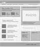

In this project HTML and CSS were utilized to create a skeleton or wireframe design
for a webpage. This assignment required css experimentation and accuracy.
This project is an example of a portfolio written using Bootstrap. It has a responsive layout with
a navbar and responsive images. This portfolio is resizable, however it is not mobile ready
due to lacking media queries in the css.
This is a boostrap portfolio that is completely responsive unlike the previous example. This example
utilizes media queries to enable resizing for use on any mobile device.
The goal of this project was to create a game that would run in the browser and feature dynamically
updated HTML and CSS powered by our JavaScript code. The player has 9 guesses to find the correct number.

The Crystal Collector is a web application that allows users to play a game where they gain points
by clicking different crystals. The goal is to match the presented score exactly without going over.

This is a timed trivia game that counts down via intervals. A counter keeps track of how
many questions were answered correctly or incorrectly. Results are displayed at the end.

GifTastic is a web application that utilizes the GIPHY API. The application has the ability
to search for gifs based on search criteria. You can also expand your search by adding buttons.

The Train Scheduler Application begins with a form that requests train information. Once entered,
the train is stored in Firebase and placed in the current train schedule. The time data is determined by
MomentJS.